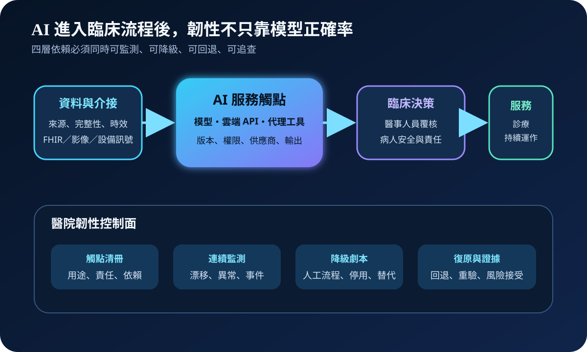
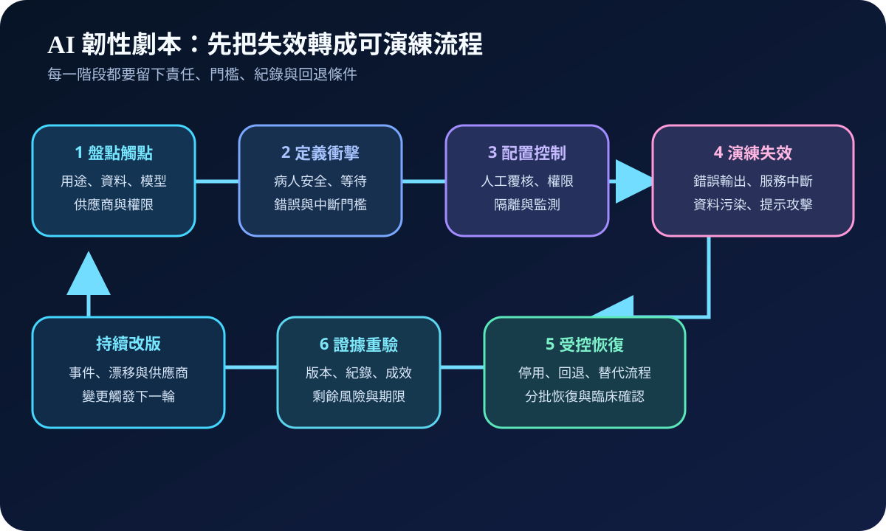
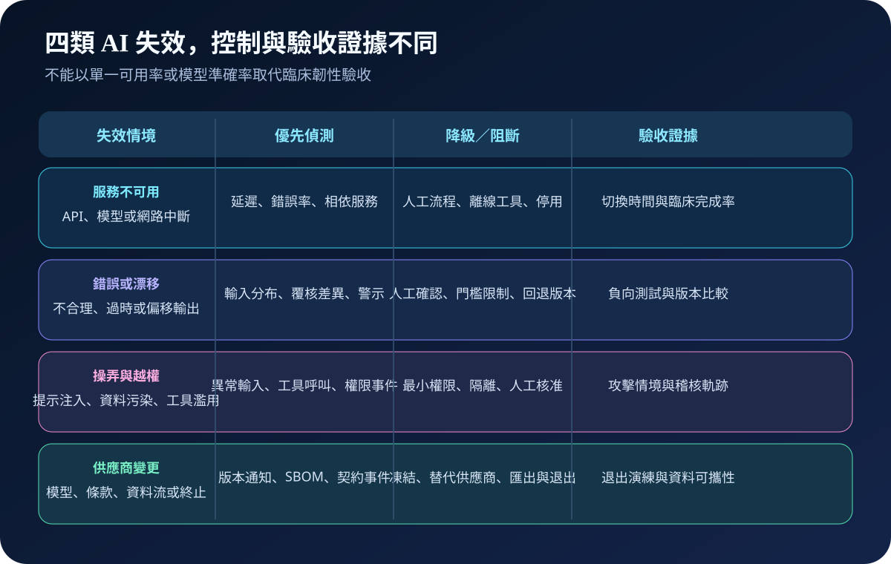

醫療資安國際觀察 · 2026-10-15
AI 進入臨床流程後如何維持韌性：從觸點清冊到降級劇本
作者：Dr. William｜醫療資訊與資安治理實務工作者
AI 服務一旦成為排程、判讀、紀錄、風險分層或照護協調的日常觸點，模型錯誤、雲端中斷、資料污染與供應商變更都可能轉成臨床服務事件。
名詞解釋：AI 韌性不是只看可用率
AI 臨床韌性是面對中斷、錯誤、操弄或依賴變更時，仍能維持安全服務、限制影響並完成可信復原的能力。AI 觸點清冊記錄用途、資料、模型、介接、工具權限、供應商、責任人與替代流程。降級劇本則預先定義何時限制、停用或切回人工流程。
國際現況與適用邊界
NIST 於 2026 年 3 月發布部署後 AI 監測報告，將事件、效能、系統與影響監測列為持續治理問題；同年 4 月發布關鍵基礎設施 AI 風險管理概念文件，提出可解釋、對抗韌性、嚴謹測試、優雅降級與失效安全等方向。FDA 的 AI 醫療器材生命週期草案則涵蓋透明度、變更、效能監測與風險管理。
台灣適用原則：NIST 文件屬自願性治理與研究參考；FDA 文件適用於其美國監管範圍。台灣醫療機構可採用清冊、劇本與證據方法，但醫療器材、個資、資安、採購及臨床責任仍依台灣法令、主管機關與院內程序辦理。
規劃：先定義服務、責任與衝擊門檻
範圍應涵蓋已核准工具、試驗服務、內嵌式 AI、外部 API 與具工具權限的代理系統。角色至少包括臨床、資訊、資安、資料治理、醫工、法遵、採購與供應商。驗收指標可包含清冊覆蓋率、高影響觸點劇本完成率、人工替代啟動時間、異常輸出攔截率、回退成功率與事件紀錄完整率。
實作：六階段建立可演練劇本
- 盤點：把 AI 用途連到資料、模型、介接、權限與供應商。
- 定界：定義可接受延遲、錯誤門檻、臨床後果及停用權責。
- 控制：配置人工覆核、最小權限、隔離、監測與版本管理。
- 演練：測試服務中斷、錯誤輸出、提示攻擊、資料污染及供應商終止。
- 恢復：執行停用、回退、替代流程、分批恢復與臨床確認。
- 重驗：保存版本、決策、事件、測試及剩餘風險，觸發下一輪改善。

風險：四類失效不能共用同一個指標
服務不可用需要替代流程與切換時間；錯誤或漂移需要輸出監測、人工確認及版本比較；提示注入、資料污染或工具越權需要隔離、最小權限與攻擊情境測試；供應商變更則需要通知、資料可攜、替代服務與退出演練。常見失敗包括清冊只有工具名稱、未記錄臨床用途、人工流程無法承受尖峰量，以及恢復後沒有重新驗證輸出與介接。

可執行清單
- 每個 AI 觸點是否有用途、責任人、版本、資料與依賴紀錄？
- 是否定義錯誤、中斷、越權與供應商變更的停用門檻？
- 人工或替代流程是否經容量與病人安全測試？
- 高影響操作是否需要人工確認並留下不可否認的稽核紀錄？
- 模型、提示、資料、API 或契約變更後是否會觸發重驗？
- 恢復是否包含介接、輸出、權限與臨床流程的分批確認？
來源
- NIST｜New Report: Challenges to the Monitoring of Deployed AI Systems（發布：2026-03-09；查閱：2026-10-15）
- NIST｜Concept Note: AI RMF Profile on Trustworthy AI in Critical Infrastructure（建立：2026-04-06；更新：2026-07-17；查閱：2026-10-15）
- U.S. FDA｜Artificial Intelligence-Enabled Device Software Functions: Lifecycle Management and Marketing Submission Recommendations（發布：2025-01-06；文件性質：草案指引；查閱：2026-10-15）
內容說明
本文依健康台灣深耕計畫相關治理內容整理，並參考 NIST 與 FDA 公開資料，提出醫療 AI 觸點清冊、降級劇本與復原驗收方法；不把外國自願性框架或監管文件視為台灣法定義務，也不取代主管機關公告、醫療專業判斷或法律意見。